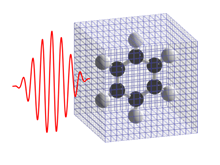

Sandbox¶
Image¶
List and Link¶
Code and syntax highlights¶
Example 1:
subroutine func1(a) implicit none integer :: a end subroutine
Example 2
subroutine func2(b) implicit none real(8) :: b end subroutine
Table¶
| Header | Description |
|---|---|
| A | D |
| B | E |
| C | F |
Citation¶
- if you use SALMON to calculate electron dynamics in a unit cell of crystalline solid, [SALMON-unit-cell]: discussing formalism and numerical implementation will be appropriate.
- if you use SALMON for electron dynamics calculations of a large-size system, [SALMON-large-system]: that discusses massively parallel implementation utilizing spatial divisions will be appropriate.